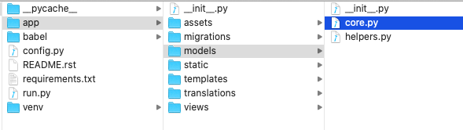
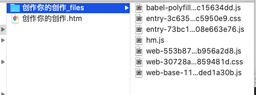
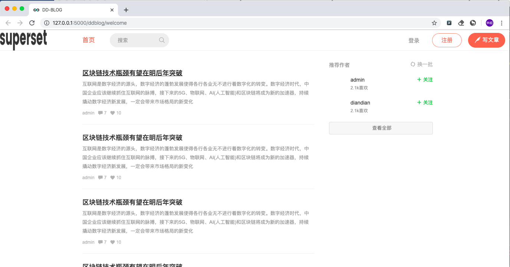

背景
上篇文章我们已经把 python + react 基本环境搭建出来了，基本环境已有，下面我将仿照某个博客网站来开发一个同样的网站。
基本环境
系统环境: macOS系统
使用python等版本如下
1 | node -v: v11.1.0 |
数据库模型配置和升级
模型配置
博客类型网站肯定和用户、文章、评论等相关，flask_appbuilder 已经自带用户模型，因此我们在这基础上添加两个模型 Blog 和 Comment（初版本只为实现基本功能）。其中 Blog 和 Comment 分别关联上用户（ab_user）信息, 除了分别关联上用户信息，Blog 和 Comment 之间实现了一对多关心。如下所示:
1 | class Blog(Model, AuditMixinNullable): |
1 | class Comment(Model, AuditMixinNullable): |
这两个模型我们都引入了一个 AuditMixinNullable，该模块继承于 flask_appbuilder 中的 AuditMixin，我们调整了 nullable 字段，使其允许使用空字段 (参考 superset), 这样我们在生成 Blog 和 Comment 模型时会生成 created_on、changed_on、created_by_fk 和changed_by_fk 四个字段。我们在 models 下新建一个helpers.py，将 AuditMixinNullable 放入该文件
1 | from datetime import datetime |
调整后的目录结构如下所示:

模型升级
以上配置都完成后我们开始升级数据库，我们进入到项目对应目录下，启动虚拟环境并设置环境变量，然后执行 flask db migrate 命令，如下图所示:

执行完成后我们会在 migration/versions/ 目录下发现新生成的一个文件，检查该文件内容，确定是否需要作出调整（一般是不需要更改）然后我们执行下面命令
1 | flask db upgrade |
以上命令都执行完成后，数据库就生成了对应的 blog 和 comment 两张表。
网站建立
样式抓取
用 Google 浏览器打开需要抓取网站的地址，使用 Command + S 快捷键保存该页面内容到本地文件下（其他浏览器保存方式自行查找）。我们发现文件下会出现一个 .htm 结尾的文件和一个 _files 结尾的文件夹。打开文件夹，我们发现里面大多是是图片，删除里面除 .css 和 .js 结尾的其他文件。如下所示:

抓取下来的 .htm 和 .css 文件内容都是错位的，为了方便查看我们使用工具将这两个文件分别格式化。这样就完成了该页面样式的抓取。
页面分析
用浏览器打开 .htm 文件，如下图所示:
分析该网站发现该页面除了导航栏主要分左右两个模块，左侧由头部轮播和文章列表两部分组成，右侧主要由banner和推荐作者两个模块组成。第一个版本我们只做文章列表和推荐作者这两个模块。
页面搭建
首页对应我们的 assets/src/welcome 模块，从上面分析知该模块我们需要的文章列表和推荐用户列表两大数据。
App.js
新增 blogList 和 recommendUsers 两大数据源，并将数据传入到 welcome.jsx 模块 具体代码如下所示:
1 | const container = document.getElementById('app'); |
Welcome.jsx
我们从 App.jsx 获取到数据后，我们进入主页面搭建过程，分析 .htm 文件我们知道我们需要两个模块的数据在 container index 中, 而博客列表数据在画红线的 col-xs-16 main 中，推荐用户列表在画蓝线的 col-xs-7 col-xs-offset-1 aside 中 如下图所示:
我们将博客列表拆分到 BlogList 中并将博客数据传入该模块，同理推荐用户拆分到 RecommendList 中并把推荐用户数据传入该模块，Welcome.jsx 中代码如下所示:
1 | render() { |
BlogList.jsx、BlogListRow.jsx、BlogListRowContent.jsx
现在我们分析 .htm 中 col-xs-16 main 模块，该模块主要是博客内容列表，这个版本我们不考虑头部的轮播图，因此我们直接找到 list-container 下的 note-list, 该模块由多个 li 组成，观察 li 的内容我们发现，该模块主要有两种类型，一种是带图片的，一种是无图的，核心样式都是一样的，因此我们可以拆分一个 BlogListRow.jsx ,在这个类中去区分有无图片这个问题。将核心的列表样式都放到 BlogListRowContent.jsx，这样blog这个模块的代码基本就可以确定下来了如下所示:
BlogList.jsx
1 | render() { |
BlogListRow.jsx
1 | render() { |
BlogListRowContent.jsx
1 | render() { |
我们只是把 .htm 的样式代码部分复制过来了，但是核心的 css 样式还没有引入到项目中，我们可以在 assets/stylesheets/ 目录下我们新建一个 welcome.css 文件来管理我们的 css 样式，打开我们刚刚保存的网站样式我们看到里面有两个 css 结尾的文件，我们打开以 entry 开头的 css 文件，发现里面有 .note-list 和 .recommended-authors 等一些样式，这些刚好和我们刚刚 blog 里面的代码样式能对应上，因此我们将该内容粘贴到 welcome.css 样式中，在打开 web 开头到文件，里面有 1w+ 行代码，粗略看了下，这里面的样式和页面的基本样式有关，因此我们将该文件内容放入基本样式文件 ddblog.less 中，并在 theme.js文件中引入该文件（后期在做调整）。这样首页的样式就配置成功了，最后我们在 welcome.jsx 文件中引入刚刚配置的 welcome.css 文件。
RecommendList.jsx RecommendRowContent.jsx
推荐用户部分的可以参考上面部分完成具体内容如下:
RecommendList.jsx
1 | render() { |
RecommendRowContent.jsx
1 | render() { |
npm run dev
1 |
|
@expose('/welcome')
def welcome(self):
blog_list = (
db.session.query(models.Blog).all()
)
if blog_list:
blog_list = [blog.simple_json for blog in blog_list]
recommend_list = (
db.session.query(security_manager.user_model).all()
)
if recommend_list:
recommend_list = [recommend.to_json() for recommend in recommend_list]
payload = {
'common': self.common_bootstrap_payload(),
'user': bootstrap_user_data(),
'blogList': blog_list or [],
'recommendUsers': recommend_list or []
}
return self.render_template(
'blog/basic.html',
entry='welcome',
bootstrap_data=json.dumps(payload)
)
`
注意 payload 中的 key（blogList，recommendUsers，user） 需要和 welcome.jsx 中的相对应。
小结
以上都配置都没出现错误，我们就可以成功启动项目了。附上一张成功启动的图
